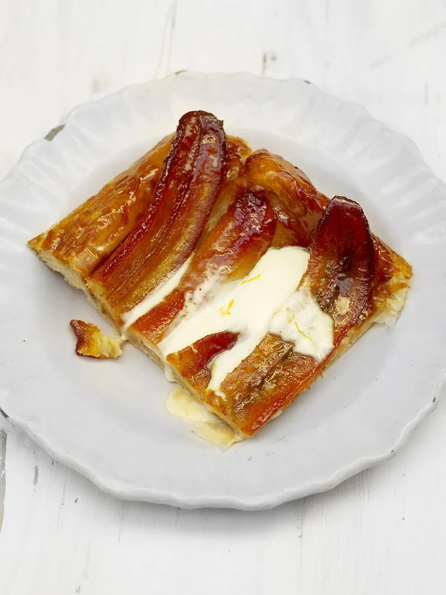

Banana tarte Tatin

OOH OHH AHH AHH
Ingredients
- 60 g unsalted butter
- 150 g caster sugar
- 4 large bananas
- ¼ teaspoon ground cinnamon
- 1 orange
- plain flour , for dusting
- 250 g puff pastry
- crème fraîche , optional
- vanilla ice cream , optional
- a few tablespoons desiccated coconut , optional
Steps
- Preheat your oven to 180°C/350°F/gas 4.
- Cut your butter into cubes and put into a sturdy deep-sided baking tray (roughly 19cm x 30cm). Place the tray on a low heat, let the butter melt, then add the sugar and stir constantly until completely combined. Continue to cook for about 5 minutes, or until the sugar has all dissolved and the mixture is golden and caramelized.
- By the time this happens, the mixture will be roasting hot so be very careful and whatever you do, DON’T be tempted to put your fingers in the mixture as you’ll give yourself a nasty burn.
- Meanwhile, peel the bananas, halve them lengthways, and lay them carefully on top of the golden caramel. Remove from the heat, then sprinkle over the cinnamon and finely grate over the zest of half your orange.
- Dust a clean work surface and rolling pin with flour. Rather than putting your pastry down flat and rolling it out, place it on its side and roll it from there, as this will give you a lighter, crisper texture. Roll it out until you have a rectangle shape about the same size as your tray and about 0.5cm thick.
- Drape your pastry over your rolling pin and carefully lay it on the baking tray, gently tucking it around the bananas to make sure they’re well covered with no gaps.
- Using a knife or fork, prick the pastry a few times. Place the tray at the top of the preheated oven for 25 to 30 minutes, or until baked golden.
- When your tarte Tatin is ready, you must turn it out at once or it will end up sticking to the baking tray. Again, you want to be very careful and make sure you don’t burn yourself on that hot caramel mixture. To turn the tarte out, cover your hand with a folded tea towel, carefully hold the tray with a serving plate or board on top and gently turn it over.
- Using the tip of a knife, pull a corner of the pastry up to check if it’s all cooked underneath (if not, pop it back into the oven for another couple of minutes), then ease the whole thing out of the tray.
- If using crème fraîche, put it into a bowl, grate over the rest of your orange zest and stir well. If using vanilla ice cream, sprinkle a few tablespoons of desiccated coconut on a plate and quickly roll a scoop of ice cream in it until coated.
- Serve your tarte tatin with a dollop of crème fraîche or coated ice cream and eat immediately!